elisa · Crouch
Fotogrammi 2, 3 (da 1). Riempimento bianco opaco nello spazio tra i polsi/avambracci. Il primo fotogramma mostra lo stesso spazio trasparente.
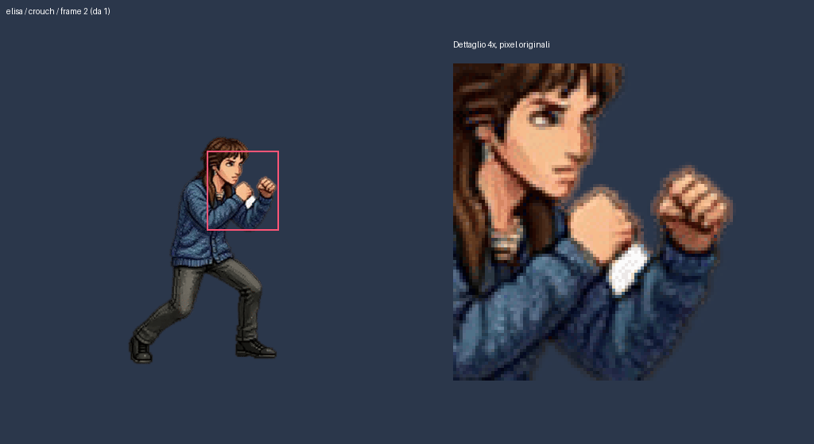
Esito storico precedente alla pulizia: i quattro casi sotto sono stati corretti. Confronto e verifica delle correzioni. Anche i difetti alpha del pugno forte basso di Marsan sono stati corretti.
23 novembre 2026 · 9 personaggi · 216 animazioni · 7.781 celle distinte (8.059 fotogrammi di riproduzione).
Confermati 4 casi: 3 animazioni di Elisa e la parata alta di Peppo. Gli spritesheet non sono stati modificati.
La scansione automatica ha esaminato tutte le celle. La verifica visiva ha riguardato i candidati e le pose rappresentative delle 216 animazioni, con controllo dei fotogrammi vicini nei casi segnalati. Non è una garanzia sull'assenza di ogni singolo pixel anomalo. I numeri dei fotogrammi partono da 1 e si riferiscono alla sequenza riprodotta nella demo.
Fotogrammi 2, 3 (da 1). Riempimento bianco opaco nello spazio tra i polsi/avambracci. Il primo fotogramma mostra lo stesso spazio trasparente.

Fotogrammi 1, 2, 3, 4 (da 1). Area bianca piatta tra i polsi nella guardia iniziale; scompare quando le braccia si aprono.
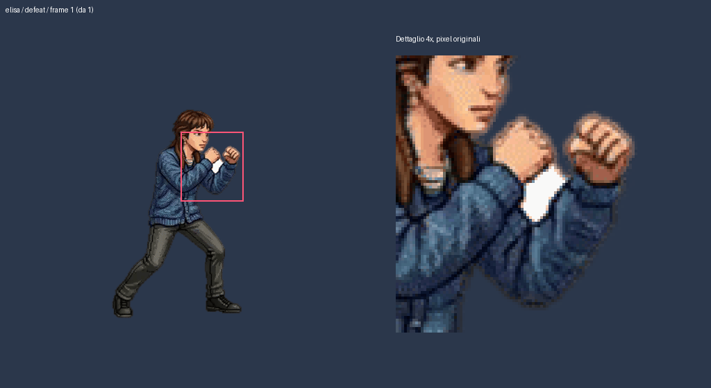
Fotogrammi 66, 67 (da 1). Il riempimento bianco tra i polsi compare durante il ritorno in guardia.
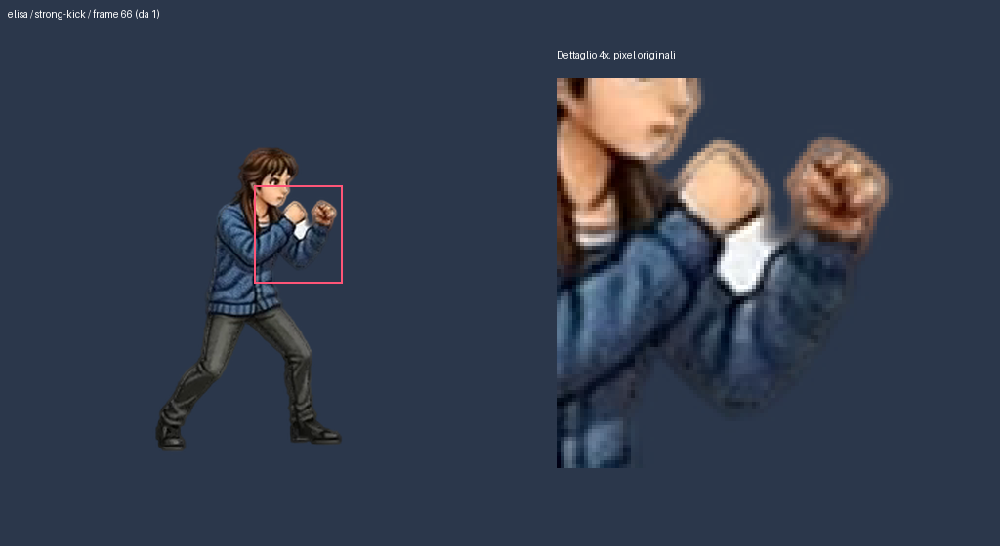
Fotogrammi 3 (da 1). Piccolo residuo bianco/celeste tra mento, pugno e avambraccio nella transizione verso la parata.
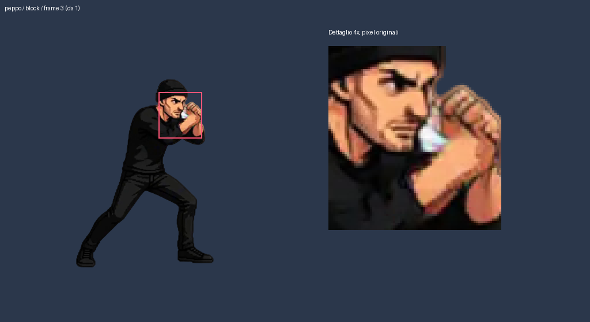
Scarpe di Alberto e Sboz, dettagli della camicia di Fabio Clara e Fra Tavarone, maniche e righe di Marsan. Scie, polvere e flash già incorporati nei file sono stati distinti dagli spazi anatomici: in particolare Victory di Marsan (frame 4–6), Defeat di Fra Tavarone (frame 4), pugni forti di Fabio Clara ed Elisa e gli effetti di Pippo.
Negli altri sette personaggi non sono emersi riempimenti bianchi impropri evidenti nei candidati esaminati. Non sono stati rilevati riempimenti bianchi evidenti tra le gambe. Restano separati i difetti di trasparenza già segnalati nel Pugno forte basso di Marsan: non sono riempimenti bianchi e questo controllo non li corregge.
Tutte le 216 animazioni (CSV) · Risultati, metodo e SHA-256 dei file (JSON) · Candidati bianchi · Candidati chiari
Le anteprime seguenti mostrano due pose per animazione e servono da orientamento, non rappresentano una revisione manuale di ogni fotogramma. Aprire l'immagine per ingrandire.
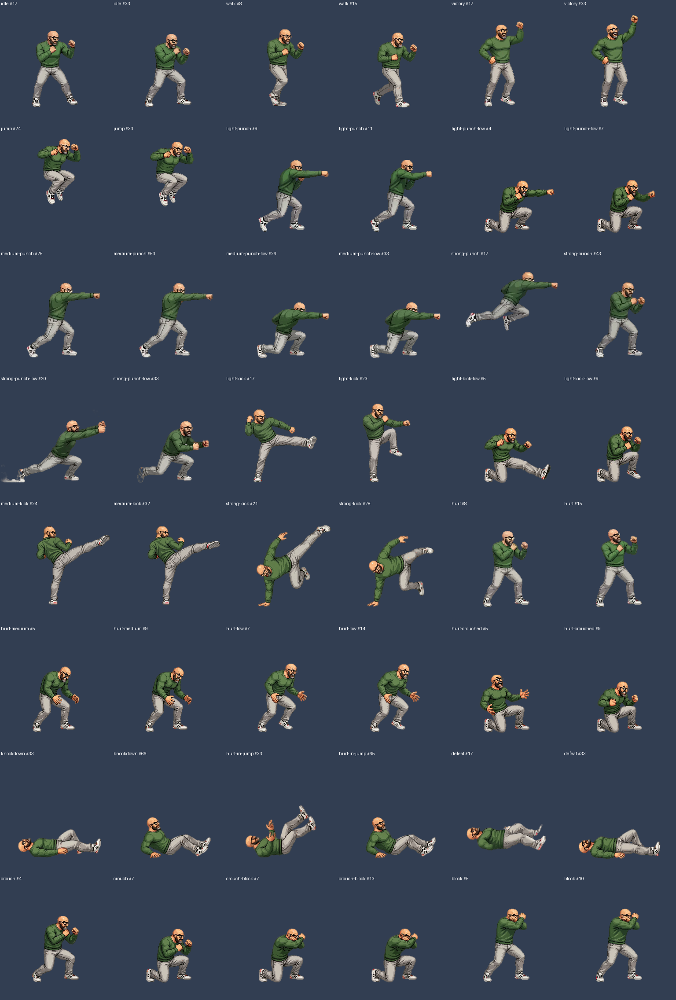
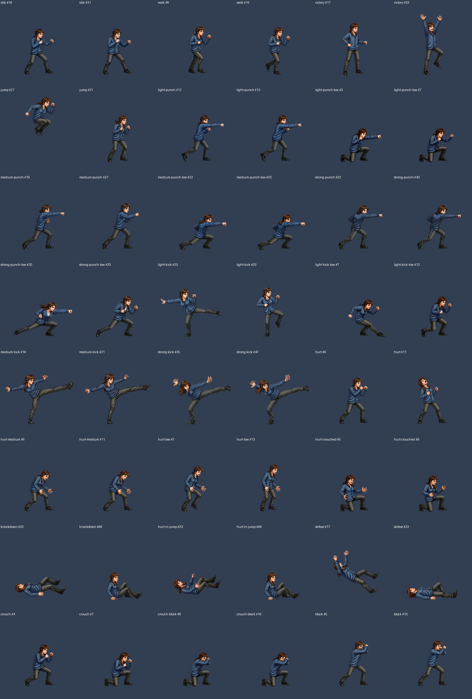
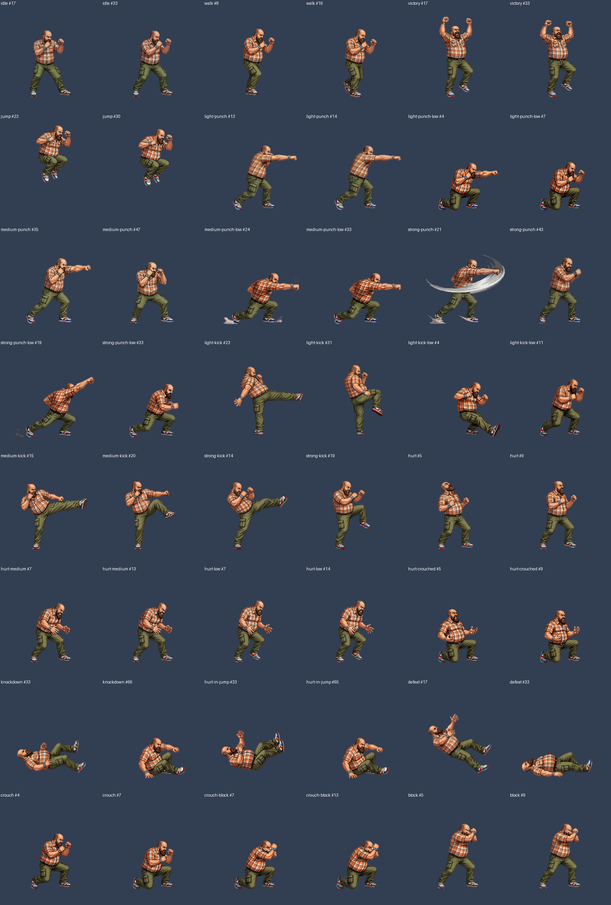
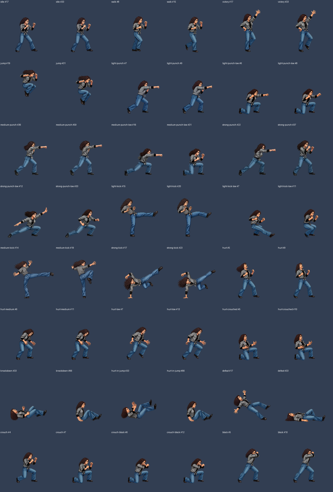
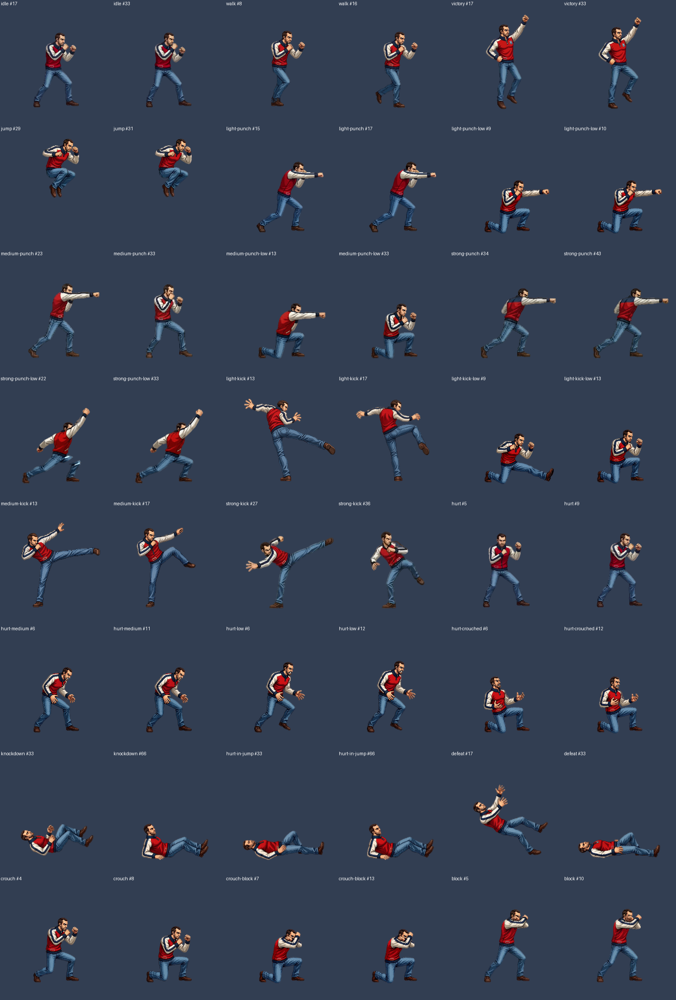
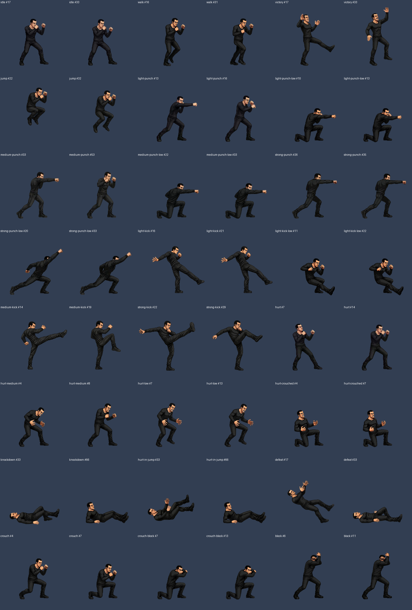
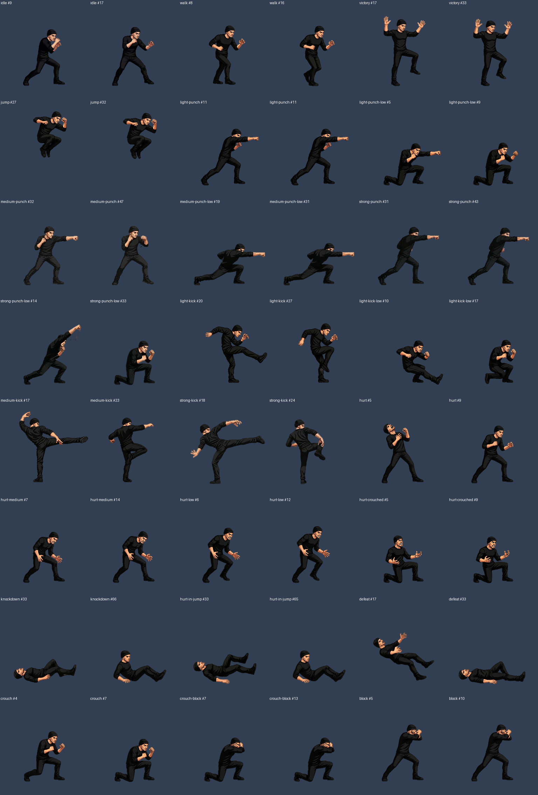
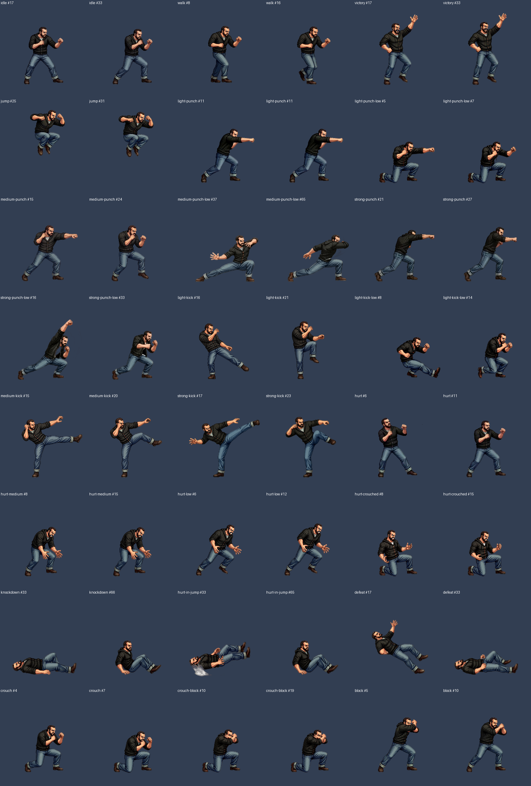
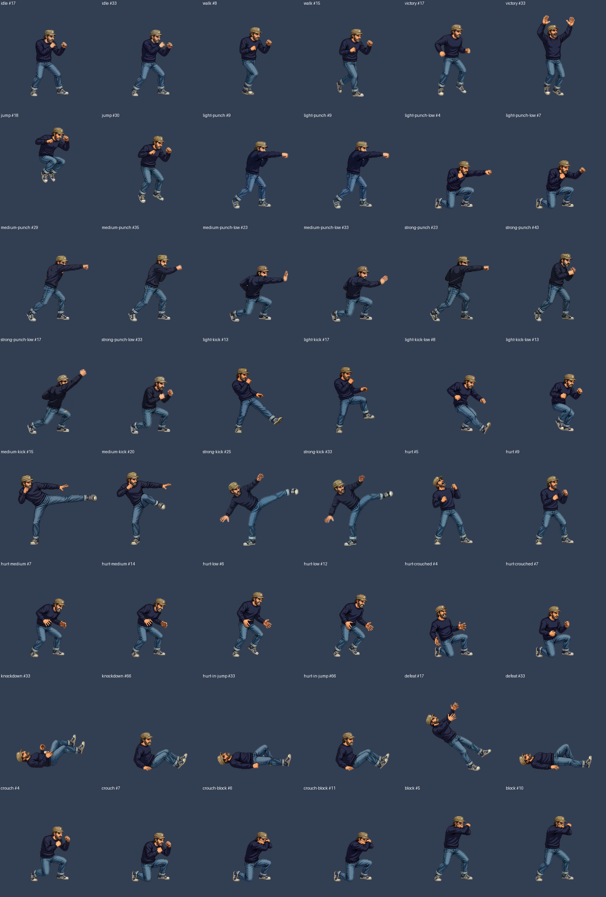